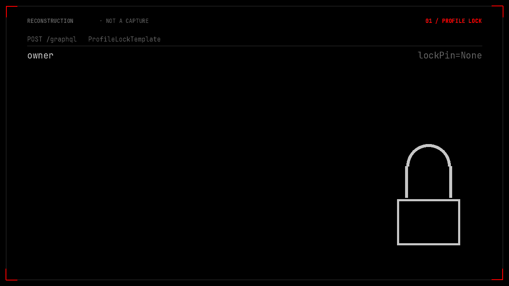
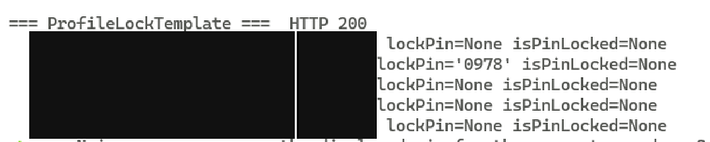
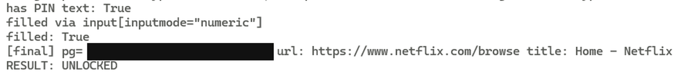

TL;DR
ProfileLockTemplate is the query the profile picker uses to draw its tiles. It selects lockPin on every entry in growthAccount.profiles, and the resolver returns the stored PIN in cleartext — to whichever profile happens to be holding the session.
So: sit on the kids profile, send one query, read the parent's four digits, type them at /ProfilesGate, and the session becomes that profile. Verified end to end, from a kids profile and from a second non-owner profile.
And the controls that make it a finding: with no cookie the query is UNAUTHENTICATED; with no PIN the gate blocks; with a wrong PIN the gate blocks; with the disclosed PIN the gate opens. The lock is genuinely enforced. The value returned by the read path is genuinely its key.
And the boundary, stated up front: this needs a session on the same account. That is not a caveat bolted on afterwards — a co-user on a shared account is the adversary the feature exists to stop, and the principal it names most explicitly is a child on the kids profile. A control that fails against its own threat model is not rescued by that threat model.
PrologueThe configuration the feature is sold for
The account had five profiles: one locked, four not, and a kids profile that is meant to be the least privileged thing on it. That is the configuration the feature exists for.
Profile Lock is the feature built for it. You choose four digits, the locked tile grows a padlock in the picker, and opening it asks for the digits. Underneath, the picker is a GraphQL client like every other part of the site, and it needs the server to tell it which tiles are locked.
That is why lockPin exists as a field on the Profile type at all. Something has to answer the question does this profile have a lock?
What I did not expect is that the same response would also answer the question what is the lock's combination? — for every profile on the account, addressed to whichever profile happened to be sitting on the other end of the connection.

lockPin beside four empty ones, and that value is what the gate accepts. The roles are drawn generically; the populated value is the one from the transcript below.Chapter 1What the lock is for
Netflix's own description of Profile Lock is unambiguous: it stops other people who use the same account from getting into a profile. The threat model is not a stranger on the internet. It is the other people on your account — a partner, a housemate, and most sharply, a child.
The lock exists to protect the one profile that matters. The kids profile, for its part, is deliberately limited: maturity-restricted, separate viewing history, no route to billing or account settings.
It can still use the profile picker, because that is the point of it.
So the question that started this was narrow. Not can I guess a PIN, and not can I reach somebody else's account. Just: what does the picker ask the server, and what does the server answer?
Chapter 2One query, whole account
The picker runs a persisted query called ProfileLockTemplate. Persisted queries are how Netflix ships GraphQL: the client sends an identifier and a version, and the server holds the text. The text itself is not secret — it is in the browser bundle — and the interesting part is one line of the selection it ships:
fragment ProfileLockTemplateAccount on Account {
profiles { guid name gender isAccountOwner isProfileCreationLocked lockPin }
}Two fields sit next to each other there, and they ask two very different questions. isProfileCreationLocked is the question the client needs: is this tile locked? lockPin is the answer to the question the client should never have been able to ask.
Sent from the kids profile, with nothing but that profile's own cookies:
POST /graphql HTTP/2
Host: www.netflix.com
Content-Type: application/json
{"operationName":"ProfileLockTemplate","variables":{},
"extensions":{"persistedQuery":{
"id":"d821963d-5bb5-43c7-a2d1-2cf7eab9f44e","version":102}}}And the response, trimmed to the parts that matter, with names replaced by roles and GUIDs truncated:
{"data":{
"currentProfile":{"guid":"NIADRLI3…","name":"kids"},
"growthAccount":{"profiles":[
{"guid":"VCWJWTGR…","name":"owner", "lockPin":null},
{"guid":"OTSWWYH4…","name":"protected", "lockPin":"0978"},
{"guid":"6DYO5LFG…","name":"second adult", "lockPin":null},
{"guid":"WSDEM6QW…","name":"spare", "lockPin":null},
{"guid":"NIADRLI3…","name":"kids", "lockPin":null}
]}}}currentProfile is the kids profile, which is exactly right. The second entry in the array is my PIN: in quotes, in cleartext, in a response addressed to a child's session.
I repeated it from a second non-owner profile and got the same five rows with the same value. Then I repeated it with no cookie at all: UNAUTHENTICATED from consumeridentitydgs, growthAccount: null. The query is not public. It is scoped to anyone on this account, which is precisely the audience it must not be scoped to.
Nothing in that response is a placeholder. There is no reveal call, no second request, no transformation: the four characters the gate accepts are the four characters in the JSON body.

lockPin column is deliberately left readable, because it is the finding. It is the one value on this page that was not masked in either direction.Chapter 3The value is the key
A leaked PIN is only a finding if the PIN is the thing that opens the lock, and if the lock holds at all. Both were testable in about a minute, in an ordinary browser, with no tooling:
kids session the account's profiles
──────────── ──────────────────────
│ POST /graphql · ProfileLockTemplate
├──► owner lockPin: null
├──► protected lockPin: "0978" ◄── the key
├──► second adult lockPin: null
└──► kids (self) lockPin: nullThe active profile is carried as a pg cookie parameter holding the profile GUID. Selecting the locked tile opens a PIN prompt. Submitting the value from the response:
[start] pg=NIADRLI3… kids profile
[gate] locked tile selected → PIN prompt shown: true
[submit] 0 9 7 8
[final] pg=OTSWWYH4… RESULT: UNLOCKED
[land] /browse renders as the protected profileThat is the whole chain. A child's own session, one query, four digits copied out of a JSON body, and the next page load belongs to somebody else's profile — with that profile's viewing history, its list, and its maturity settings.

/browse as the protected profile — RESULT: UNLOCKED. The pg value on the [final] line is masked; nothing else is.Chapter 4The controls
The wrong-PIN row is the one that makes the rest of this page honest. If the gate accepted anything, the disclosure would be noise. It does not.
| What I did | What happened | What it establishes |
|---|---|---|
| Same query, no cookie | UNAUTHENTICATED (consumeridentitydgs), growthAccount: null |
Not an anonymous read — the query is bound to a session |
| Locked tile, nothing submitted | Stays pg=NIADRLI3…, prompt remains |
The gate blocks on absence, not just on wrongness |
Locked tile, wrong PIN 1111 |
Stays pg=NIADRLI3… |
The gate is a real check, not a formality |
| Locked tile, disclosed PIN | pg=OTSWWYH4…, /browse as the protected profile |
The leaked value is the working key |
| Same query from a second non-owner profile | Identical five rows, identical PIN | Not a quirk of one session or one profile |
The empty-submission and wrong-PIN rows came first; the rest came after. That is the order they should always be taken in. The lock works. The value returned by the read path is the value the lock is waiting for.
Chapter 5Enforced on write, forgotten on read
Here is the part that stops this being an accident of one badly named field. The same system has a write path for the same secret, and the write path is correct.
growthSetProfilePin and growthRemoveProfilePin both answer PERMISSION_DENIED, origin passport, unless the caller holds the account-level authorisation they require. That is a decision, made deliberately, in the same codebase, about the same four digits.
The read path has no equivalent decision. The resolver returns the stored PIN in cleartext for every entry in growthAccount.profiles, regardless of which profile is asking — not masked, not scoped to the current profile, not withheld until the PIN has been presented once. The value is a plain nullable string all the way through: the Android client's model declares it as a String (kotlin/C19159hyi.java, field l) and serialises it straight through (kotlin/C19161hyk.java:586-588).
The missing check is one sentence long, and it is the sentence every PIN prompt in the world is built on: a session may read its own profile's PIN, and only after that PIN has been presented in that session.
Chapter 6The amplifier I am not claiming
Netflix's GraphQL edge reflects the request Origin — any origin, including the literal null — and answers with Access-Control-Allow-Credentials: true, with no Origin validation and no CSRF token on the POST. That is a general property of the endpoint, and it applies to this query like any other: with a session attached, the response is readable from https://evil.com.
In a browser today it is not reachable that way. NetflixId is SameSite=Lax and SecureNetflixId is Strict, so a page on another site cannot get those cookies attached to the request. That is a browser control, not a server control, and it is currently the only thing standing between this bug and a remote PIN-theft primitive.
I am writing that down as context for the score, not as part of the finding. "It would be worse if the cookie policy changed" is not a vulnerability, and I am not going to bill for it. What is fair to say is that the server-side defence the cookie policy is substituting for does not exist: if the attribute is ever relaxed, or if anything gets a foothold in the *.netflix.com origin, the read path is already open and the response is already readable.
Chapter 7The honest score
CVSS 3.1 · 7.1 High — AV:N/AC:L/PR:L/UI:N/S:U/C:H/I:L/A:N.
Every argument I have ever had about a score came from somebody rounding the prerequisite in their own favour, so here is mine in the open.
Why the prerequisite does not rescue it
"The attacker already has a profile on the account" sounds like mitigation until you read what the feature is for. Profile Lock is not an account-takeover defence. It is an intra-account boundary, and the principal it names as the adversary — a child on the kids profile — is exactly the principal that can read the PIN. A parental control that tells the child the combination is not partially working. It is not working.
Chapter 8The fix
None of this is exotic, and the write path already shows the system knows how to gate this secret. It just doesn't do it on the read.
- Never return the PIN.
isPinLocked: Booleananswers the only question the picker needs, and a padlock can be drawn from a boolean. - If a client genuinely needs to display an existing PIN — none does — return a masked placeholder, and put any reveal behind its own re-authenticated request.
- Scope the field. A session may read the PIN of the profile it is currently on, and only after presenting it once in that session.
- Verify at the gate, server-side, with an attempt counter. Ten thousand combinations is a small number of requests; the decision that matters should not be made by the client.
- Require the current PIN to change or remove it. Removing a lock without knowing the combination is its own small problem, and it sits in the same resolver pair.
Add the read-side rule and the feature does what it says on the tin: the kids profile sees a padlock, the padlock does not volunteer the combination, and the adult profile stays the adult's.
ReceiptsWhat the claim rests on
| Artefact | What it establishes |
|---|---|
One POST — ProfileLockTemplate, d821963d… v102, empty variables | A single request; no enumeration, no brute force, no second call |
| Response body | Five profiles returned, one lockPin populated in cleartext |
| No-cookie control | UNAUTHENTICATED / growthAccount: null — the query is session-bound |
| Gate transcript | pg moves from the kids GUID to the protected GUID; /browse renders as that profile |
| Wrong-PIN control | Session stays on the kids profile — the lock is real |
| Write path | growthSetProfilePin / growthRemoveProfilePin → PERMISSION_DENIED, origin passport |
| Client model | kotlin/C19159hyi.java field l; kotlin/C19161hyk.java:586-588 |
| Scope | My own household account and profiles only; no other user, no other account |
| shoo0lin/netflix-profile-lock-pin | Three harnesses, the redacted response, the control transcript, and the clip with its edit script |
The harnesses are public, because running them needs a session on the account being tested. That is the boundary the finding lives inside: every script takes a cookie file you supply for an account you control, none of them reach across accounts, and the read is masked by default. Run the read, run the two controls that must fail, then run the one that must succeed — in that order, so a broken harness fails loudly instead of quietly proving something.
There is a shorter version of this post. It says: a parental control returned the parental control's secret to the person the control exists to stop. Everything above is the working-out, kept because a claim about a parental control should be checkable by someone who does not trust me.
I still use the lock. The gate refuses the kids profile every time it is asked properly, and that is worth something. It just also answers — to anyone on the account who knows which query to send — the question the gate was there to ask.
A lock is not the combination. A lock is the decision to keep the combination to yourself.
Tested on my own account against my own profiles. Profile names are replaced with their roles and GUIDs truncated; the PIN is shown because it is the evidence, and the lock has since been removed. No other user's data appears anywhere in this write-up.